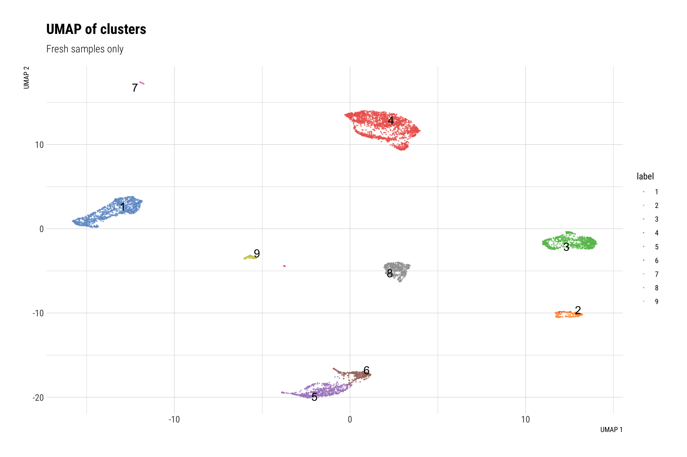
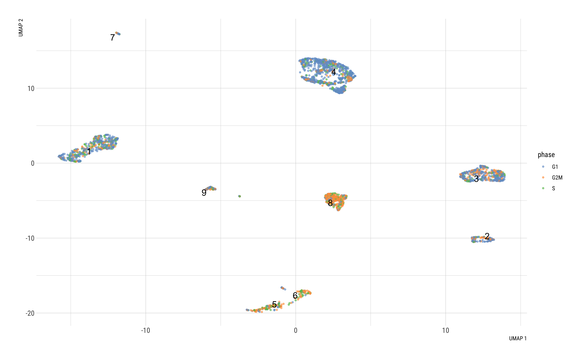
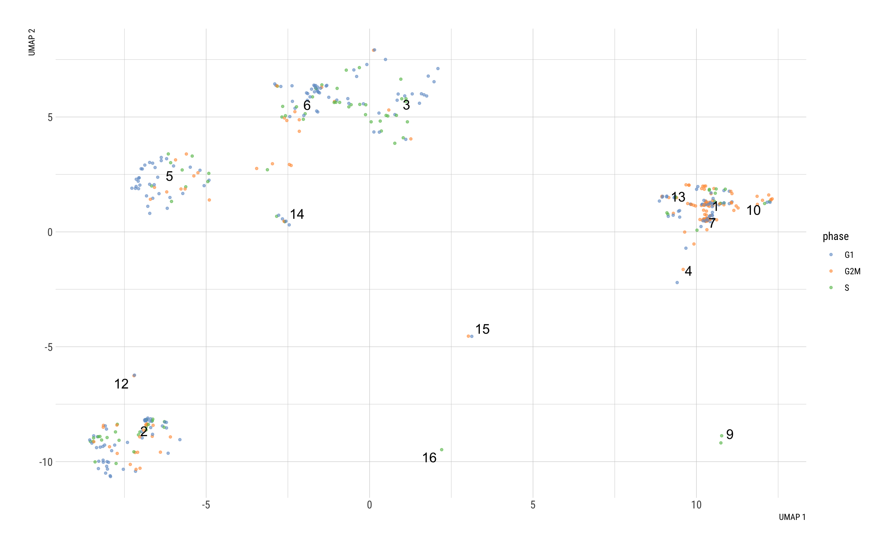

Cell Cycle Analysis
Dominique Paul
2022-02-01
Last updated: 2022-02-01
Checks: 6 1
Knit directory: 02_Protocol/analysis/
This reproducible R Markdown analysis was created with workflowr (version 1.7.0). The Checks tab describes the reproducibility checks that were applied when the results were created. The Past versions tab lists the development history.
The R Markdown file has unstaged changes. To know which version of the R Markdown file created these results, you’ll want to first commit it to the Git repo. If you’re still working on the analysis, you can ignore this warning. When you’re finished, you can run wflow_publish to commit the R Markdown file and build the HTML.
Great job! The global environment was empty. Objects defined in the global environment can affect the analysis in your R Markdown file in unknown ways. For reproduciblity it’s best to always run the code in an empty environment.
The command set.seed(20211228) was run prior to running the code in the R Markdown file. Setting a seed ensures that any results that rely on randomness, e.g. subsampling or permutations, are reproducible.
Great job! Recording the operating system, R version, and package versions is critical for reproducibility.
Nice! There were no cached chunks for this analysis, so you can be confident that you successfully produced the results during this run.
Great job! Using relative paths to the files within your workflowr project makes it easier to run your code on other machines.
Great! You are using Git for version control. Tracking code development and connecting the code version to the results is critical for reproducibility.
The results in this page were generated with repository version 5f4cea3. See the Past versions tab to see a history of the changes made to the R Markdown and HTML files.
Note that you need to be careful to ensure that all relevant files for the analysis have been committed to Git prior to generating the results (you can use wflow_publish or wflow_git_commit). workflowr only checks the R Markdown file, but you know if there are other scripts or data files that it depends on. Below is the status of the Git repository when the results were generated:
Ignored files:
Ignored: .DS_Store
Ignored: Metadata/.DS_Store
Ignored: Metadata/cell_annotation_markers/.DS_Store
Ignored: Paper/
Ignored: analysis/.DS_Store
Ignored: analysis/.RData
Ignored: analysis/.Rhistory
Ignored: analysis/Supple_table_1.png
Ignored: analysis/Unused/.DS_Store
Ignored: code/.DS_Store
Ignored: code/seeds/.DS_Store
Ignored: data/
Ignored: output/.DS_Store
Ignored: output/plots/.DS_Store
Untracked files:
Untracked: Metadata/~$cluster_annotation_map.xlsx
Untracked: analysis/FVC_quick_marker.Rmd
Untracked: analysis/logs/EDI_05_Annotation.Rmd-2022-01-31-19h-33m-54s-err.txt
Untracked: analysis/logs/EDI_05_Annotation.Rmd-2022-01-31-19h-33m-54s-out.txt
Untracked: analysis/logs/EDI_05_Annotation.Rmd-2022-01-31-19h-54m-46s-err.txt
Untracked: analysis/logs/EDI_05_Annotation.Rmd-2022-01-31-19h-54m-46s-out.txt
Untracked: analysis/logs/EDI_05_Annotation.Rmd-2022-01-31-19h-55m-02s-err.txt
Untracked: analysis/logs/EDI_05_Annotation.Rmd-2022-01-31-19h-55m-02s-out.txt
Untracked: analysis/logs/EDI_05_Annotation.Rmd-2022-01-31-20h-33m-08s-err.txt
Untracked: analysis/logs/EDI_05_Annotation.Rmd-2022-01-31-20h-33m-08s-out.txt
Untracked: analysis/logs/EDI_06_marker_genes.Rmd-2022-01-31-20h-40m-14s-err.txt
Untracked: analysis/logs/EDI_06_marker_genes.Rmd-2022-01-31-20h-40m-14s-out.txt
Untracked: analysis/logs/EDI_07_DA.Rmd-2022-01-31-20h-43m-32s-err.txt
Untracked: analysis/logs/EDI_07_DA.Rmd-2022-01-31-20h-43m-32s-out.txt
Untracked: analysis/logs/EDI_08_Subclustering.Rmd-2022-01-31-20h-45m-24s-err.txt
Untracked: analysis/logs/EDI_08_Subclustering.Rmd-2022-01-31-20h-45m-24s-out.txt
Untracked: analysis/logs/EDI_08_Subclustering.Rmd-2022-01-31-22h-50m-16s-err.txt
Untracked: analysis/logs/EDI_08_Subclustering.Rmd-2022-01-31-22h-50m-16s-out.txt
Untracked: analysis/logs/P2_01_data_comparison.Rmd-2022-01-31-15h-32m-54s-err.txt
Untracked: analysis/logs/P2_01_data_comparison.Rmd-2022-01-31-15h-32m-54s-out.txt
Untracked: analysis/logs/P2_02_Cell_Cycle.Rmd-2022-01-31-16h-25m-56s-err.txt
Untracked: analysis/logs/P2_02_Cell_Cycle.Rmd-2022-01-31-16h-25m-56s-out.txt
Untracked: analysis/logs/P2_02_Cell_Cycle.Rmd-2022-02-01-09h-13m-33s-err.txt
Untracked: analysis/logs/P2_02_Cell_Cycle.Rmd-2022-02-01-09h-13m-33s-out.txt
Untracked: analysis/logs/P2_03_Fresh_only_subclustering.Rmd-2022-01-31-16h-32m-06s-err.txt
Untracked: analysis/logs/P2_03_Fresh_only_subclustering.Rmd-2022-01-31-16h-32m-06s-out.txt
Untracked: analysis/logs/P2_03_Fresh_only_subclustering.Rmd-2022-01-31-22h-36m-39s-err.txt
Untracked: analysis/logs/P2_03_Fresh_only_subclustering.Rmd-2022-01-31-22h-36m-39s-out.txt
Untracked: analysis/logs/P2_03_FvC_Annotations.Rmd-2022-01-31-16h-43m-33s-err.txt
Untracked: analysis/logs/P2_03_FvC_Annotations.Rmd-2022-01-31-16h-43m-33s-out.txt
Untracked: analysis/logs/P2_03_FvC_Annotations.Rmd-2022-01-31-22h-46m-20s-err.txt
Untracked: analysis/logs/P2_03_FvC_Annotations.Rmd-2022-01-31-22h-46m-20s-out.txt
Untracked: analysis/logs/P2_03_FvC_Annotations.Rmd-2022-01-31-23h-58m-09s-err.txt
Untracked: analysis/logs/P2_03_FvC_Annotations.Rmd-2022-01-31-23h-58m-09s-out.txt
Untracked: analysis/logs/P2_04_FvC_gene_expression_plot.Rmd-2022-01-31-16h-48m-06s-err.txt
Untracked: analysis/logs/P2_04_FvC_gene_expression_plot.Rmd-2022-01-31-16h-48m-06s-out.txt
Untracked: analysis/logs/P2_04_FvC_gene_expression_plot.Rmd-2022-02-01-00h-00m-34s-err.txt
Untracked: analysis/logs/P2_04_FvC_gene_expression_plot.Rmd-2022-02-01-00h-00m-34s-out.txt
Untracked: analysis/logs/index.Rmd-2022-01-31-16h-53m-18s-err.txt
Untracked: analysis/logs/index.Rmd-2022-01-31-16h-53m-18s-out.txt
Untracked: analysis/logs/index.Rmd-2022-02-01-00h-03m-27s-err.txt
Untracked: analysis/logs/index.Rmd-2022-02-01-00h-03m-27s-out.txt
Untracked: output/plots/Suppl_Figure5.png
Untracked: output/plots/Suppl_table_1.csv
Untracked: output/plots/Suppl_table_1.png
Untracked: output/plots/Suppl_table_2.csv
Untracked: output/plots/Suppl_table_2.png
Untracked: output/plots/old/
Untracked: output/plots/overview_figure_fvc.png
Untracked: output/plots_31Jan/
Unstaged changes:
Modified: Metadata/cluster_annotation_map.xlsx
Modified: Metadata/marker_genes_heatmaps.xlsx
Modified: analysis/EDI_01_Loading_and_Preprocessing.Rmd
Modified: analysis/EDI_03_Batch_correction.Rmd
Modified: analysis/EDI_05_Annotation.Rmd
Modified: analysis/P2_01_data_comparison.Rmd
Modified: analysis/P2_02_Cell_Cycle.Rmd
Modified: analysis/P2_03_Fresh_only_subclustering.Rmd
Modified: analysis/P2_03_FvC_Annotations.Rmd
Modified: analysis/P2_04_FvC_gene_expression_plot.Rmd
Modified: analysis/admin.rmd
Modified: analysis/plots.Rmd
Modified: code/general_purpose_code.R
Modified: output/plots/figure3.png
Modified: output/plots/figure3_supplemental.png
Modified: output/plots/figure4.png
Modified: output/plots/figure5.png
Modified: output/plots/figure6.png
Note that any generated files, e.g. HTML, png, CSS, etc., are not included in this status report because it is ok for generated content to have uncommitted changes.
These are the previous versions of the repository in which changes were made to the R Markdown (analysis/P2_02_Cell_Cycle.Rmd) and HTML (docs/P2_02_Cell_Cycle.html) files. If you’ve configured a remote Git repository (see ?wflow_git_remote), click on the hyperlinks in the table below to view the files as they were in that past version.
| File | Version | Author | Date | Message |
|---|---|---|---|---|
| html | 5f4cea3 | dominique-paul-uzh | 2022-01-31 | re-ran fresh and FvC |
| html | 239a294 | dominique-paul-uzh | 2022-01-30 | Added new clustering after meeting 29-Jan-2022 |
| Rmd | 1923ae3 | dominique-paul-uzh | 2022-01-12 | first commit |
| html | 1923ae3 | dominique-paul-uzh | 2022-01-12 | first commit |
Load data
We load the data for the two ‘Fresh’ samples as well as the joint dataset of fresh AND cultured samples that we have processed in the previous script. Both the two and the six samples were batch-corrected respectively.
file_path_fresh <- "../data/EOS_files/Fresh_EOS1_sce.rds"
sce_fresh <- readRDS(file_path_fresh)
rownames(sce_fresh) <- rowData(sce_fresh)$ID # might need this for the analysis
file_path_all <- "../data/EOS_files/FvC_EOS1_sce.rds"
sce_all <- readRDS(file_path_all)
rownames(sce_all) <- rowData(sce_all)$ID # might need this for the analysisDownload cell cycle genes
We download the marker genes for the cell cycle stages from a github repository. The data comes in a data frame. We split the genes into lists according to the cell cycle phase.
cc_file <- getURL("https://raw.githubusercontent.com/hbc/tinyatlas/master/cell_cycle/Homo_sapiens.csv")
cell_cycle_genes <- read.csv(text = cc_file)
head(cell_cycle_genes) phase geneID modified
1 G2/M ENSG00000010292 9/13/17
2 G2/M ENSG00000011426 9/13/17
3 G2/M ENSG00000013810 9/13/17
4 G2/M ENSG00000072571 9/13/17
5 G2/M ENSG00000075218 9/13/17
6 G2/M ENSG00000080986 9/13/17s_genes <- cell_cycle_genes %>%
dplyr::filter(phase == "S") %>%
pull("geneID")
g2m_genes <- cell_cycle_genes %>%
dplyr::filter(phase == "G2/M") %>%
pull("geneID")Identify cell cycle phases
The function we are using for the identification of the cell cycle is a Seurat function. Seurat is a data format similar to the Single Cell Experiment object we generally use in the other scrips of this analysis. So we convert our Single Cell Experiment object into a Seurat object and run the identification of the cell cycle phase. We save the results to our Single Cell Experiment object as we will be using this object class it in our remaining analysis.
## Fresh samples only
sce_seurat_fresh <- as.Seurat(sce_fresh, counts="counts", data="logcounts")
sce_seurat_fresh <- CellCycleScoring(sce_seurat_fresh,
g2m.features = g2m_genes,
s.features = s_genes)
sce_fresh$phase <- sce_seurat_fresh$Phase
## Fresh and cultured samples
sce_seurat_all <- as.Seurat(sce_all, counts="counts", data="logcounts")
sce_seurat_all <- CellCycleScoring(sce_seurat_all,
g2m.features = g2m_genes,
s.features = s_genes)
sce_all$phase <- sce_seurat_all$PhaseVisualisation
Coloured by clusters label
We show the plots once to inspect the clusters. It could be interesting to see that certain clusters might have been formed based on the similarity of the cell cycle phase.
cat("\n\n### Fresh samples only \n\n")Fresh samples only
plotReducedDim(sce_fresh, "UMAP", colour_by="label", text_by="label", point_size=0.25) +
labs(title="UMAP of clusters",
subtitle="Fresh samples only") +
theme_ipsum_rc()
| Version | Author | Date |
|---|---|---|
| 1923ae3 | dominique-paul-uzh | 2022-01-12 |
cat("\n\n### Fresh and cultured samples \n\n")Fresh and cultured samples
plotReducedDim(sce_all, "UMAP", colour_by="label", text_by="label", point_size=0.25) +
labs(title="UMAP of clusters",
subtitle="Fresh and cultured samples") +
theme_ipsum_rc()
| Version | Author | Date |
|---|---|---|
| 1923ae3 | dominique-paul-uzh | 2022-01-12 |
Stratified by sample and coloured by cell cycle phase
cat("\n\n### Fresh samples only {.tabset}\n\n")Fresh samples only
plot_stratified_views(sce_fresh, "UMAP", stratify_by="Sample", colour_by="phase", text_by="label", tabset="####")Fresh_S2

| Version | Author | Date |
|---|---|---|
| 1923ae3 | dominique-paul-uzh | 2022-01-12 |
cat("\n\n### Fresh and cultured samples {.tabset}\n\n")Fresh and cultured samples
plot_stratified_views(sce_all, "UMAP", stratify_by="Sample", colour_by="phase", text_by="label", tabset="####")Culture_S1
Warning: Removed 2 rows containing missing values (geom_text_repel).
| Version | Author | Date |
|---|---|---|
| 1923ae3 | dominique-paul-uzh | 2022-01-12 |
Cluster-phase composition (stacked barplot)
Cell cycle by sample
cat("\n\n### Fresh samples only \n\n")Fresh samples only
as.data.frame(colData(sce_fresh)) %>%
group_by(label, phase) %>%
summarise(Freq=n()) %>%
ggplot(aes(x=label, y=Freq, fill=phase, label=Freq)) +
geom_bar(stat="identity", position="fill") +
labs(title="Frequency of cell phase by cluster",
subtitle="Labels represent absolute number of cells per group",
x="Cluster",
y="Frequency") +
geom_text(size=3, position = position_fill(vjust=0.5))`summarise()` has grouped output by 'label'. You can override using the `.groups` argument.
| Version | Author | Date |
|---|---|---|
| 1923ae3 | dominique-paul-uzh | 2022-01-12 |
cat("\n\n### Fresh and cultured samples \n\n")Fresh and cultured samples
as.data.frame(colData(sce_all)) %>%
group_by(label, phase) %>%
summarise(Freq=n()) %>%
ggplot(aes(x=label, y=Freq, fill=phase, label=Freq)) +
geom_bar(stat="identity", position="fill") +
labs(title="Frequency of cell phase by cluster",
subtitle="Labels represent absolute number of cells per group",
x="Cluster",
y="Frequency") +
geom_text(size=3, position = position_fill(vjust=0.5))`summarise()` has grouped output by 'label'. You can override using the `.groups` argument.
| Version | Author | Date |
|---|---|---|
| 1923ae3 | dominique-paul-uzh | 2022-01-12 |
Save data
# Fresh samples only
file_path_fresh <- "../data/EOS_files/Fresh_EOS2_sce.rds"
rownames(sce_fresh) <- rowData(sce_fresh)$Symbol
saveRDS(sce_fresh, file=file_path_fresh)
upload_file_to_iSEE(file_path_fresh)Command executed:
scp -i ~/.ssh/id_imls_servers /Users/dominiquepaul/xRobinson\ Group/02_Protocol/data/EOS_Files/Fresh_EOS2_sce.rds dominique@imlspenticton.uzh.ch:/home/Shared/retger/synovial/data/protocol_paper_BBDP/sce/Fresh_EOS2_sce___2022-02-01.rds# Frsh and cultured samples
file_path_all <- "../data/EOS_files/FvC_EOS2_sce.rds"
rownames(sce_all) <- rowData(sce_all)$Symbol
saveRDS(sce_all, file=file_path_all)
upload_file_to_iSEE(file_path_all)Command executed:
scp -i ~/.ssh/id_imls_servers /Users/dominiquepaul/xRobinson\ Group/02_Protocol/data/EOS_Files/FvC_EOS2_sce.rds dominique@imlspenticton.uzh.ch:/home/Shared/retger/synovial/data/protocol_paper_BBDP/sce/FvC_EOS2_sce___2022-02-01.rds
sessionInfo()R version 4.1.0 (2021-05-18)
Platform: x86_64-apple-darwin17.0 (64-bit)
Running under: macOS Big Sur 10.16
Matrix products: default
BLAS: /Library/Frameworks/R.framework/Versions/4.1/Resources/lib/libRblas.dylib
LAPACK: /Library/Frameworks/R.framework/Versions/4.1/Resources/lib/libRlapack.dylib
locale:
[1] en_US.UTF-8/en_US.UTF-8/en_US.UTF-8/C/en_US.UTF-8/en_US.UTF-8
attached base packages:
[1] stats4 stats graphics grDevices utils datasets methods
[8] base
other attached packages:
[1] stringr_1.4.0 openxlsx_4.2.5
[3] RColorBrewer_1.1-2 scater_1.22.0
[5] scuttle_1.4.0 dplyr_1.0.7
[7] SingleCellExperiment_1.16.0 SummarizedExperiment_1.24.0
[9] Biobase_2.54.0 GenomicRanges_1.46.1
[11] GenomeInfoDb_1.30.0 IRanges_2.28.0
[13] S4Vectors_0.32.3 BiocGenerics_0.40.0
[15] MatrixGenerics_1.6.0 matrixStats_0.61.0
[17] ggplot2_3.3.5 hrbrthemes_0.8.6
[19] SeuratObject_4.0.4 Seurat_4.0.6
[21] RCurl_1.98-1.5
loaded via a namespace (and not attached):
[1] workflowr_1.7.0 systemfonts_1.0.3
[3] plyr_1.8.6 igraph_1.2.10
[5] lazyeval_0.2.2 splines_4.1.0
[7] BiocParallel_1.28.3 listenv_0.8.0
[9] scattermore_0.7 digest_0.6.29
[11] htmltools_0.5.2 viridis_0.6.2
[13] fansi_1.0.2 magrittr_2.0.1
[15] ScaledMatrix_1.2.0 tensor_1.5
[17] cluster_2.1.2 ROCR_1.0-11
[19] globals_0.14.0 extrafont_0.17
[21] extrafontdb_1.0 spatstat.sparse_2.1-0
[23] colorspace_2.0-2 ggrepel_0.9.1
[25] xfun_0.29 crayon_1.4.2
[27] jsonlite_1.7.3 spatstat.data_2.1-2
[29] survival_3.2-13 zoo_1.8-9
[31] glue_1.6.0 polyclip_1.10-0
[33] gtable_0.3.0 zlibbioc_1.40.0
[35] XVector_0.34.0 leiden_0.3.9
[37] DelayedArray_0.20.0 BiocSingular_1.10.0
[39] Rttf2pt1_1.3.8 future.apply_1.8.1
[41] abind_1.4-5 scales_1.1.1
[43] DBI_1.1.2 miniUI_0.1.1.1
[45] Rcpp_1.0.8 viridisLite_0.4.0
[47] xtable_1.8-4 reticulate_1.22
[49] spatstat.core_2.3-2 rsvd_1.0.5
[51] htmlwidgets_1.5.4 httr_1.4.2
[53] ellipsis_0.3.2 ica_1.0-2
[55] farver_2.1.0 pkgconfig_2.0.3
[57] sass_0.4.0 uwot_0.1.11
[59] deldir_1.0-6 utf8_1.2.2
[61] labeling_0.4.2 tidyselect_1.1.1
[63] rlang_0.4.12 reshape2_1.4.4
[65] later_1.3.0 munsell_0.5.0
[67] tools_4.1.0 generics_0.1.1
[69] ggridges_0.5.3 evaluate_0.14
[71] fastmap_1.1.0 yaml_2.2.1
[73] goftest_1.2-3 knitr_1.37
[75] fs_1.5.2 fitdistrplus_1.1-6
[77] zip_2.2.0 purrr_0.3.4
[79] RANN_2.6.1 sparseMatrixStats_1.6.0
[81] pbapply_1.5-0 future_1.23.0
[83] nlme_3.1-153 whisker_0.4
[85] mime_0.12 compiler_4.1.0
[87] beeswarm_0.4.0 plotly_4.10.0
[89] png_0.1-7 spatstat.utils_2.3-0
[91] tibble_3.1.6 bslib_0.3.1
[93] stringi_1.7.6 highr_0.9
[95] gdtools_0.2.3 lattice_0.20-45
[97] Matrix_1.4-0 vctrs_0.3.8
[99] pillar_1.6.4 lifecycle_1.0.1
[101] spatstat.geom_2.3-1 lmtest_0.9-39
[103] jquerylib_0.1.4 BiocNeighbors_1.12.0
[105] RcppAnnoy_0.0.19 data.table_1.14.2
[107] cowplot_1.1.1 bitops_1.0-7
[109] irlba_2.3.5 httpuv_1.6.4
[111] patchwork_1.1.1 R6_2.5.1
[113] promises_1.2.0.1 KernSmooth_2.23-20
[115] gridExtra_2.3 vipor_0.4.5
[117] parallelly_1.30.0 codetools_0.2-18
[119] MASS_7.3-54 assertthat_0.2.1
[121] rprojroot_2.0.2 withr_2.4.3
[123] sctransform_0.3.2 GenomeInfoDbData_1.2.7
[125] mgcv_1.8-38 parallel_4.1.0
[127] beachmat_2.10.0 grid_4.1.0
[129] rpart_4.1-15 tidyr_1.1.4
[131] DelayedMatrixStats_1.16.0 rmarkdown_2.11
[133] Rtsne_0.15 git2r_0.29.0
[135] shiny_1.7.1 ggbeeswarm_0.6.0